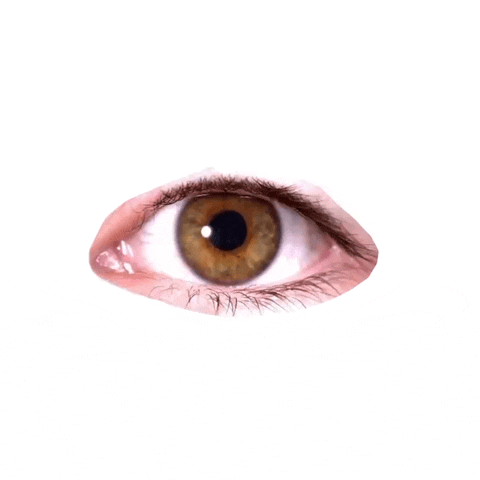

Who's watching, and how do we look back?
Cameras on doorbells, readers on lamp-posts, trackers in our pockets. A hands-on workshop for spotting them, questioning them, and making art that turns the lens around.
Every walk to the shop passes a dozen quiet observers. Some are obvious, like a camera on a pole. Others are invisible, announcing themselves over Bluetooth and Wi-Fi to anyone who listens.
In this workshop we listen. A small radio scanner shows what is broadcasting in the room. Then we map where we are seen, ask who the watching is for, and make a piece that hides, reveals or looks back.
No experience needed. All materials provided.
